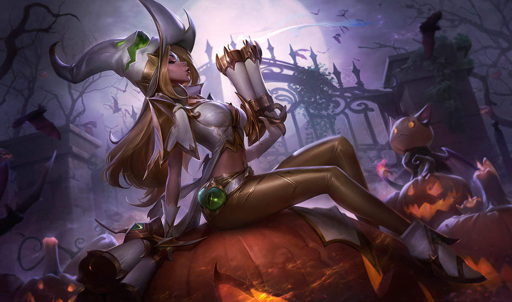
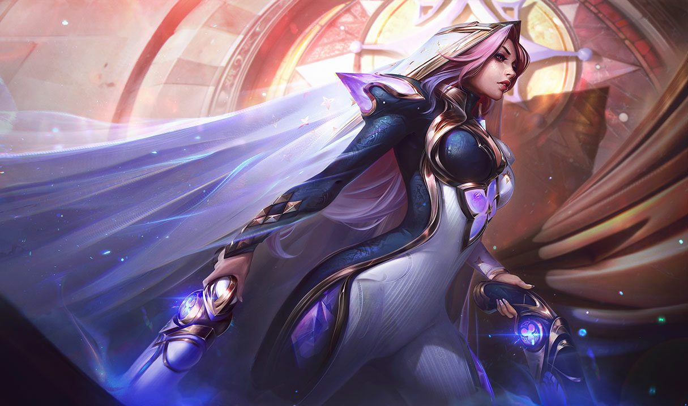

Início
História
Habilidades
Skins
Relacionamentos
SKINS PRESTÍGIO
Até o momento, Miss Fortune possui apenas três skins da linha Prestígio. Cada uma delas apresenta um visual exclusivo, detalhes dourados característicos e efeitos especiais que destacam ainda mais a Caçadora de Recompensas no campo de batalha.
Miss Fortune Feiticeira de Prestígio (2019)
Miss Fortune Feiticeira de Prestígio (2022)

Miss Fortune Pacto Quebrado de Prestígio
